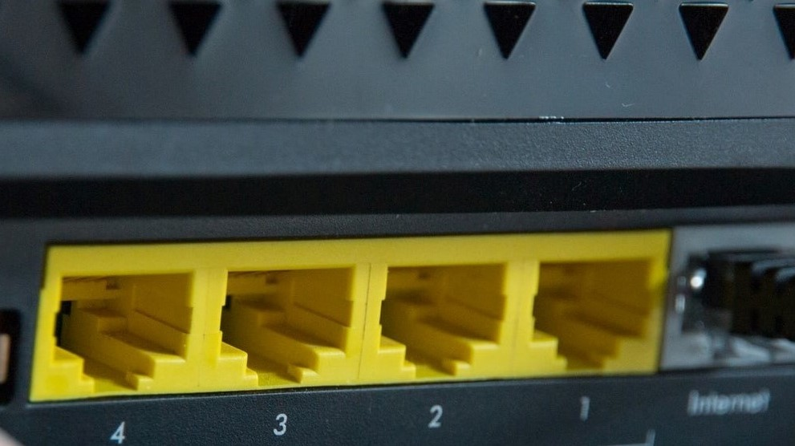

How Wires, Cables & WiFi help Navigate the Internet

The internet, or WiFi sends over binary information made of bits, 1’s or 0’s, on or off, two options that are mutually exclusive. These two choices are why it's called binary code. 8 bits make 1 byte, 1000 bytes is a kilobyte and 1000 kilobytes is a megabyte. These are essentially atoms of information.
Bits of Information: Electricity
Bits are sent by electrical impulses, lights or radio waves. An example of the electricity is like turning a lightbulb on and off. These impulses are timed in a manner that the sender and receiver can receive the same message through binary. The speed of this is called bandwidth, which is the transmission rate and capacity of the device which is measured by bitrates, which is the number of bits that one can transmit. Latency is the time it takes for a bit to go from sender to receiver. Computers are much faster than humans and therefore can send information faster.

Bits of Information: Light
Light can be much faster than electrical impulses. Fiber Optic cables are cables that reflect light and many bits can be sent simultaneous.
Bits of Information: Radio
Radio signals can be used to send information from one location to another. Binary code is converted into radio waves of different frequencies. Receiving machines do the opposite. It might be difficult to radio signals use from locations of great distance.